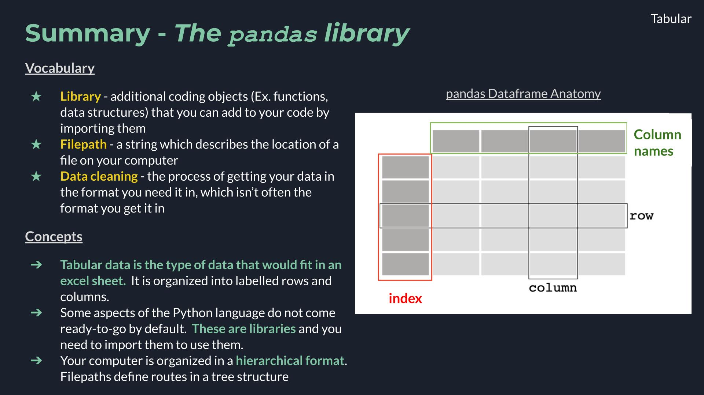
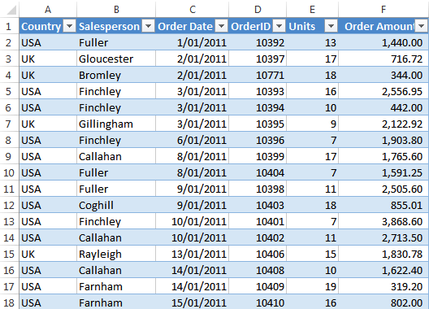
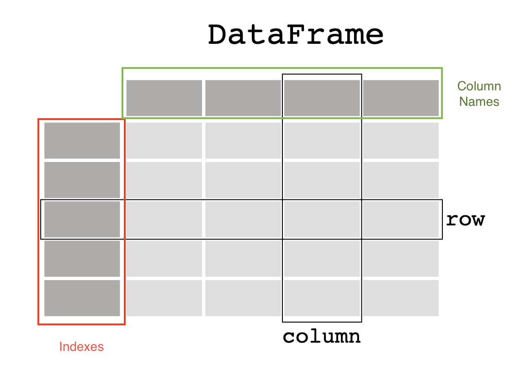
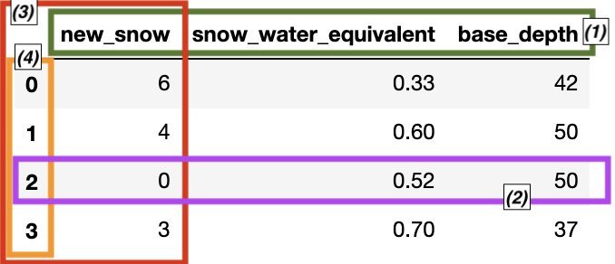
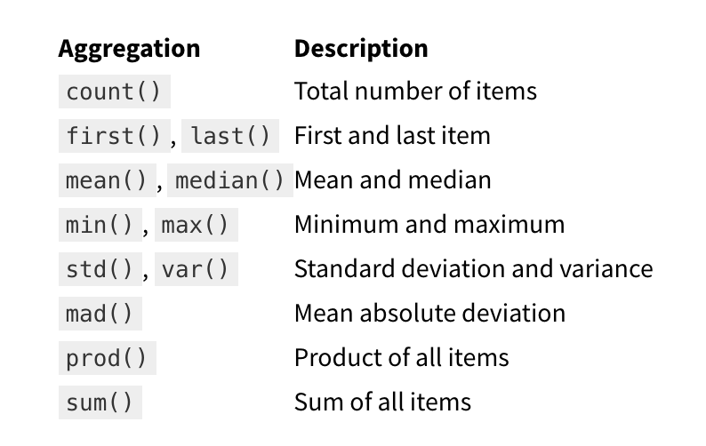

2.1 The pandas Library#
Lesson Content
🗃️ Libraries
🐼
pandasData structures🔍 Accessing values in DataFrames
💧 Filepaths & Opening files with USGS stream gauge data
👨👦👦 Some Aggregations
Context#
Today we are building up our arsenal of data structures with a really exciting one - the pandas Dataframe. This is a data structure that models tabular data, or data with labelled rows and columns. Learning this data structure will allow us to start manipulating large datasets of that format, and do things that we couldn’t otherwise do in a program like excel.
Today we will focus on opening and inspecting data, using USGS stream gauge data as an applied example.

🗃️ Libraries#
Today we are going to dig into our first library in Python! A library is a like an “extras” package for a programming language (think Settlers of Catan expansion pack). It is a set of commands that doesn’t automatically come activated when you use Python, but that you can still use if you just tell Python that you plan to do so. You let python know you are going to use a library with an import statment. After you do that the additional commands become availble.
# Attempting to use the `math` library before importing
math.factorial(3)
---------------------------------------------------------------------------
NameError Traceback (most recent call last)
Cell In[1], line 2
1 # Attempting to use the `math` library before importing
----> 2 math.factorial(3)
NameError: name 'math' is not defined
# Importing a Python library
import math
# Attempt #2 to use the `math` libray, after importing
math.factorial(3)
6
Once we have imported the library we can use the new commands that the library contains. The math library was just an example and it isn’t the focus of this lesson, but if you want you can see a list of math commands here.
Vocabulary
Library: additional coding objects (Ex. functions, data structures) that you can add to your code by importing them
🌀 More Info: Standard vs. Non-standard Libraries
One large chunk of libraries are together referred to as the Python Standard Library. These libraries are not a part of the “core” language (everything we can do without import statments) but have still been offically accepted into the Python distribution package and are maintained in the same way as the rest of the core language. You can read more here.
There are also libraries which aren’t a part of this designation, and are still widely used and developed, but they are simply not included when you hit the “Download Python” button. Non-standard libraries are maintained by groups of developers outside of the Python Software Foundation and anyone can make one. That includes you!
🐼 Tabular Data and pandas#
Tabular data is the type of data that you would see in an excel sheet. Data is organized into rows (horizontal) and columns (vertical). It is also common for tabular data to have an index which uniquely lables the rows. A really common type of tabular data is a CSV file.

Where are the rows, columns, and indexes in this excel sheet?
pandas library 🐼#
pandas is a very common library that is used for working with tabular data. It is cannonically imported like this:
# Import the libary. You only have to do this once per file.
import pandas as pd
# This line shortens the output. It will be explained more later in the notebook.
pd.set_option('display.max_rows', 10)
pd.set_option('display.max_columns', 6)
pandas Data structures#
There are two primary pandas data structures:
pd.Seriespd.DataFrame
The primary structure of these two is a DataFrame and a Series is a simpler version of a DataFrame. Knowing that both exist, however, can be helpful when debugging.
pd.DataFrame#
A pandas dataframe is a data structure organized into rows and columns. Other important parts of the anatomy of a data frame are the columns names and the index.

Image ammended from pandas documentation.
Here’s how we can make one from a little bit of scratch data.
# Step 1 - Define our fake data with a dictionary
forecast_dict = {
'temperature': [25, 20, 27, 31],
'humidity': [60, 65, 62, 80],
'wind_speed': [10, 9, 10, 6]
}
# Step 2 - use `pd.DataFrame()` to convert our dictionary into a dataframe
# Assign it to a variable called `forecast`
forecast = pd.DataFrame(forecast_dict)
# View the dataframe
forecast
| temperature | humidity | wind_speed | |
|---|---|---|---|
| 0 | 25 | 60 | 10 |
| 1 | 20 | 65 | 9 |
| 2 | 27 | 62 | 10 |
| 3 | 31 | 80 | 6 |
Our first dataframe! We can see that we have 3 columns, with column names temperature, humidity, and wind_speed. We have 4 data entries, or 4 rows, labeled by our indexes, which in this case are just the numbers 0-3.
📝 Check your understanding
Label the boxed components of the dataframe.

Answers reference the figure in the order: green, purple, red, orange
a) (1) 1 row of data, (2) data series, (3) column names, (4) indexes
b) (1) indexes, (2) data series, (3) 1 row of data, (4) column names
c) (1) indexes, (2) 1 row of data, (3) data series, (4) column names
d) (1) column names, (2) data series, (3) 1 row of data, (4) indexes
e) (1) column names, (2) 1 row of data, (3) data series, (4) indexes
snow_report = {
'new_snow': [6, 4, 0, 3],
'snow_water_equivalent': [0.33, 0.6, 0.52, 0.7],
'base_depth': [42, 50, 50, 37]
}
pd.DataFrame(snow_report)
| new_snow | snow_water_equivalent | base_depth | |
|---|---|---|---|
| 0 | 6 | 0.33 | 42 |
| 1 | 4 | 0.60 | 50 |
| 2 | 0 | 0.52 | 50 |
| 3 | 3 | 0.70 | 37 |
pd.Series#
The other major pandas data strucutre is a Series, which represents just a single column of a dataframe. It still has indexes, like a dataframe, but since a series is only ever a single column it doesn’t have a column name.

Image from Data Science Made Simple.
We access a single series (column) of our dataframe using brackets and the name of the column.
# Viewing a series (column) of data from a dataframe.
forecast['humidity']
0 60
1 65
2 62
3 80
Name: humidity, dtype: int64
Accessing values in pd.DataFrame()#
Even though pandas dataframes are new data structures, some of the patterns for accessing data are very similar to what we saw in the list and dictionary data structures. What’s exciting is that the concept – indexing – is conceptually similar and so in response the syntax is also similar.
Two main ways you may want to access data in a dataframe might be:
look at all the data in a single column
look at all the data in a single row
View data in a single column#
The syntax for this is akin to looking up an item in a dictionary:
forecast['humidity']
0 60
1 65
2 62
3 80
Name: humidity, dtype: int64
View data in a single row (indexing)#
When looking up data for a row we use the indexes, and the same [] syntax that we have seen in lists. pandas uses the [] and : notation in the exact same way. The only new addition is the .iloc syntax that goes before the square brackets [].
# Display just the row of index 2
forecast.iloc[2]
temperature 27
humidity 62
wind_speed 10
Name: 2, dtype: int64
# Display rows index 2-3
forecast.iloc[2:4]
| temperature | humidity | wind_speed | |
|---|---|---|---|
| 2 | 27 | 62 | 10 |
| 3 | 31 | 80 | 6 |
The checkins below use the forecast dataframe we have been working with.
forecast = pd.DataFrame({
'temperature': [25, 20, 27, 31],
'humidity': [60, 65, 62, 80],
'wind_speed': [10, 9, 10, 6]
})
forecast
| temperature | humidity | wind_speed | |
|---|---|---|---|
| 0 | 25 | 60 | 10 |
| 1 | 20 | 65 | 9 |
| 2 | 27 | 62 | 10 |
| 3 | 31 | 80 | 6 |
📝 Check your understanding
Write a line of code to get just the
wind_speedcolumn.Write a new line of code to get just the row of index 3.
📝 Check your understanding
What is the value of forecast['humidity'].iloc[2]?
a) the row: 27 62 10
b) the column: 60 65 62 80
c) the row: 20 65 9
d) 65
e) 62
🌟 A note about assigning dataframes to variables#
It’s easy to feel like when you do something to find one part of a dataframe (Ex. forecast.iloc[2:4] or forecast['humidity']) you have changed the dataframe. This is not the case, however, and the original dataframe stays the same.
# Looking up the 2nd and 3rd indices of the forecast dataframe
forecast.iloc[2:4]
| temperature | humidity | wind_speed | |
|---|---|---|---|
| 2 | 27 | 62 | 10 |
| 3 | 31 | 80 | 6 |
# `forecast` is still the same dataframe
forecast
| temperature | humidity | wind_speed | |
|---|---|---|---|
| 0 | 25 | 60 | 10 |
| 1 | 20 | 65 | 9 |
| 2 | 27 | 62 | 10 |
| 3 | 31 | 80 | 6 |
This is nice for data exploration, when you don’t want the values to change every time you look at them. If you are trying to permanently change your data, you need to remember to update the dataframe by reassigning the variable.
# Updating the forecast variable with just the two rows
forecast = forecast.iloc[2:4]
# `forecast was updated`
forecast
| temperature | humidity | wind_speed | |
|---|---|---|---|
| 2 | 27 | 62 | 10 |
| 3 | 31 | 80 | 6 |
Using some real data❗️#
To work with the pandas library we’ll use as an example some USGS stream gauge data (Source link).
First let’s open up the file. We aren’t going to dive into this too much so right now just notice that the function I used is pd.read_csv() (docs).
# Read in the data
water_vars = pd.read_csv('./data/englewood_3_12_21_usgs_water.tsv', sep='\t', skiprows=30)
# Check it out 👀
water_vars
| agency_cd | site_no | datetime | ... | 210924_00300_cd | 210925_00400 | 210925_00400_cd | |
|---|---|---|---|---|---|---|---|
| 0 | 5s | 15s | 20d | ... | 10s | 14n | 10s |
| 1 | USGS | 06711565 | 2021-03-12 00:00 | ... | P | 8.1 | P |
| 2 | USGS | 06711565 | 2021-03-12 00:15 | ... | P | 8.1 | P |
| 3 | USGS | 06711565 | 2021-03-12 00:30 | ... | P | 8.1 | P |
| 4 | USGS | 06711565 | 2021-03-12 00:45 | ... | P | 8.1 | P |
| ... | ... | ... | ... | ... | ... | ... | ... |
| 142 | USGS | 06711565 | 2021-03-13 11:15 | ... | P | 7.9 | P |
| 143 | USGS | 06711565 | 2021-03-13 11:30 | ... | P | 7.9 | P |
| 144 | USGS | 06711565 | 2021-03-13 11:45 | ... | P | 7.9 | P |
| 145 | USGS | 06711565 | 2021-03-13 12:00 | ... | P | 7.9 | P |
| 146 | USGS | 06711565 | 2021-03-13 12:15 | ... | P | 7.9 | P |
147 rows × 12 columns
Option 2: This piece of code below also works and is more specialized to tab-seperated sheets. I chose to use the more generalized read_csv function above.
df = pd.read_table('./data/englewood_3_12_21_usgs_water.tsv', skiprows=31)
Filepaths#
Your computer is organized hierarchically.

Figure from ResearchGate
The other part of that data loading statement to take note is the './data/englewood_3_12_21_usgs_water.tsv' part. This is called the filepath and it is a string that describes the location of the data that you want to open. A few pieces of the anatomy of a filepath to notice:
/- forward slashes signal that you have entered a new folder. (Windows machines natively use a back slash\, but the Anaconda powershell can handle either).tsv- this is the file extension, which tells us what type of file format the data is stored in an informs us how we open it.- the period at the beginning tells the computer to start looking for data in the same place that the code is being run in.
Choosing to start your filepath with a . is called specificying a relative filepath, because you are telling the computer to start looking for the file relative to where the file is being run. If you move this file to another place on your computer and don’t move the data with it the import statment won’t work anymore. The alternative to a relative filepath is an aboslute filepath, in which case you start your file path at the very tippy top of your computer’s organizational structure (the root directory).
Other vocab notes:
directory is the same thing as a folder.
To loop back to our example, we put together our filepath by defining the following directions for our computer:
start by specifing the current directory as the starting point:
.go into the data folder:
./datachoose the file named englewood_3_12_21_usgs_water.tsv:
'./data/englewood_3_12_21_usgs_water.tsv'
🎉 And there we have our file
Vocabulary
Filepath: A string that describes the location of a file on a computer. Filepath can be either relative, with respect to a particular file, or absolute, with respect to the highest file in the file structure.
📝 Check your understanding
Say you are working in the folder structure shown in the image above.
What is the absolute relative filepath from the code file PARAMETER2.R to the data file CountryDataset?
Back to our data#
This data isn’t super meaningful at first glance. In the block of code below I do some formatting to improve that. This step is often called data cleaning is unfortunately pretty common with real world data. You will likely spend a chunk of your time on this. (This is sometimes refered to as the 80/20 rule for data science and there is a lot of chatter that goes into trying to reverse it).
That isn’t the focus right now, though. I want to get onto working with the data so I’ve smushed all these lines of code together. I left comments so if you want to come back later to break this into seperate code blocks and see what I did you can.
# There are a lot of variables here, so let's shorten our dataframe to a few variables
water_vars = water_vars[['datetime', '210920_00060', '210922_00010', '210924_00300', '210925_00400']]
# Get rid of the first row of hard-coded datatype info
water_vars = water_vars.drop(0)
# Rename the columns from their USGS codes to more human-readible names
name_codes = {'210920_00060': 'discharge','210922_00010': 'temperature', '210924_00300': 'dissolved oxygen', '210925_00400': 'pH'}
water_vars = water_vars.rename(columns=name_codes)
# Convert columns with numbers to numeric data types
water_vars = water_vars.apply(pd.to_numeric, errors='ignore', axis=1)
/var/folders/nb/y7dp0ct55_58hrhrhlz5vbkm0000gn/T/ipykernel_7167/3494512369.py:9: FutureWarning: errors='ignore' is deprecated and will raise in a future version. Use to_numeric without passing `errors` and catch exceptions explicitly instead
water_vars = water_vars.apply(pd.to_numeric, errors='ignore', axis=1)
Vocabulary
Data Cleaning: The often necessary step of organizing and formatting a data source after it is opened.
Our cleaned version of the data:
water_vars
| datetime | discharge | temperature | dissolved oxygen | pH | |
|---|---|---|---|---|---|
| 1 | 2021-03-12 00:00 | 44.5 | 8.1 | 8.3 | 8.1 |
| 2 | 2021-03-12 00:15 | 44.5 | 8.1 | 8.2 | 8.1 |
| 3 | 2021-03-12 00:30 | 44.5 | 8.1 | 8.2 | 8.1 |
| 4 | 2021-03-12 00:45 | 44.5 | 8.1 | 8.1 | 8.1 |
| 5 | 2021-03-12 01:00 | 44.5 | 8.1 | 8.1 | 8.1 |
| ... | ... | ... | ... | ... | ... |
| 142 | 2021-03-13 11:15 | 42.6 | 6.7 | 9.8 | 7.9 |
| 143 | 2021-03-13 11:30 | 42.6 | 6.7 | 9.9 | 7.9 |
| 144 | 2021-03-13 11:45 | 42.6 | 6.7 | 10.2 | 7.9 |
| 145 | 2021-03-13 12:00 | 46.5 | 6.7 | 10.3 | 7.9 |
| 146 | 2021-03-13 12:15 | NaN | 6.6 | 10.3 | 7.9 |
146 rows × 5 columns
Accessing larger data#
Our example dataframes from the previous section were small enough that we could always see the whole thing just by printing it. That won’t usually be the case with real data.
When the data is long there are other ways besides reading through it all to help you get a sense of the data. One way is to get some overview statistics with the .info() or the .describe() methods.
.info() returns:
data type and number of indexes
index values
columns with number of non-null values and data type
how much memory the object uses
water_vars.info()
<class 'pandas.core.frame.DataFrame'>
RangeIndex: 146 entries, 1 to 146
Data columns (total 5 columns):
# Column Non-Null Count Dtype
--- ------ -------------- -----
0 datetime 146 non-null object
1 discharge 145 non-null object
2 temperature 144 non-null object
3 dissolved oxygen 146 non-null object
4 pH 146 non-null object
dtypes: object(5)
memory usage: 5.8+ KB
for each column .describe() returns:
“count” - number of non-null values
“unique” - number of different values
“top” - most common value
“freq” - how often the most common value occurs
water_vars.describe()
| datetime | discharge | temperature | dissolved oxygen | pH | |
|---|---|---|---|---|---|
| count | 146 | 145 | 144 | 146 | 146 |
| unique | 146 | 6 | 20 | 47 | 5 |
| top | 2021-03-12 00:00 | 44.5 | 7.7 | 8.2 | 7.9 |
| freq | 1 | 52 | 18 | 24 | 55 |
🌀 More Info: Viewing more rows
By default Jupyter will shorten the data and tell you that it has done that by putting the row of ... in the middle. If you would like to change the default to show more rows or columns you can do that with:
# Here 20 is the number of rows you would like to display
pd.set_option('display.max_rows', 20)
Aggregations#
Another way to get a sense of your data is to run a few aggregations on the data, such as taking the max or min of specific columns. You also might need to do this as a part of your research. Some common aggregations:

Table from jakevdp’s Python Data Science Handbook
water_vars
| datetime | discharge | temperature | dissolved oxygen | pH | |
|---|---|---|---|---|---|
| 1 | 2021-03-12 00:00 | 44.5 | 8.1 | 8.3 | 8.1 |
| 2 | 2021-03-12 00:15 | 44.5 | 8.1 | 8.2 | 8.1 |
| 3 | 2021-03-12 00:30 | 44.5 | 8.1 | 8.2 | 8.1 |
| 4 | 2021-03-12 00:45 | 44.5 | 8.1 | 8.1 | 8.1 |
| 5 | 2021-03-12 01:00 | 44.5 | 8.1 | 8.1 | 8.1 |
| ... | ... | ... | ... | ... | ... |
| 142 | 2021-03-13 11:15 | 42.6 | 6.7 | 9.8 | 7.9 |
| 143 | 2021-03-13 11:30 | 42.6 | 6.7 | 9.9 | 7.9 |
| 144 | 2021-03-13 11:45 | 42.6 | 6.7 | 10.2 | 7.9 |
| 145 | 2021-03-13 12:00 | 46.5 | 6.7 | 10.3 | 7.9 |
| 146 | 2021-03-13 12:15 | NaN | 6.6 | 10.3 | 7.9 |
146 rows × 5 columns
water_vars.max()
---------------------------------------------------------------------------
TypeError Traceback (most recent call last)
Cell In[26], line 1
----> 1 water_vars.max()
File ~/miniconda3/envs/sarp/lib/python3.13/site-packages/pandas/core/frame.py:11656, in DataFrame.max(self, axis, skipna, numeric_only, **kwargs)
11648 @doc(make_doc("max", ndim=2))
11649 def max(
11650 self,
(...)
11654 **kwargs,
11655 ):
> 11656 result = super().max(axis, skipna, numeric_only, **kwargs)
11657 if isinstance(result, Series):
11658 result = result.__finalize__(self, method="max")
File ~/miniconda3/envs/sarp/lib/python3.13/site-packages/pandas/core/generic.py:12404, in NDFrame.max(self, axis, skipna, numeric_only, **kwargs)
12397 def max(
12398 self,
12399 axis: Axis | None = 0,
(...)
12402 **kwargs,
12403 ):
> 12404 return self._stat_function(
12405 "max",
12406 nanops.nanmax,
12407 axis,
12408 skipna,
12409 numeric_only,
12410 **kwargs,
12411 )
File ~/miniconda3/envs/sarp/lib/python3.13/site-packages/pandas/core/generic.py:12377, in NDFrame._stat_function(self, name, func, axis, skipna, numeric_only, **kwargs)
12373 nv.validate_func(name, (), kwargs)
12375 validate_bool_kwarg(skipna, "skipna", none_allowed=False)
> 12377 return self._reduce(
12378 func, name=name, axis=axis, skipna=skipna, numeric_only=numeric_only
12379 )
File ~/miniconda3/envs/sarp/lib/python3.13/site-packages/pandas/core/frame.py:11562, in DataFrame._reduce(self, op, name, axis, skipna, numeric_only, filter_type, **kwds)
11558 df = df.T
11560 # After possibly _get_data and transposing, we are now in the
11561 # simple case where we can use BlockManager.reduce
> 11562 res = df._mgr.reduce(blk_func)
11563 out = df._constructor_from_mgr(res, axes=res.axes).iloc[0]
11564 if out_dtype is not None and out.dtype != "boolean":
File ~/miniconda3/envs/sarp/lib/python3.13/site-packages/pandas/core/internals/managers.py:1500, in BlockManager.reduce(self, func)
1498 res_blocks: list[Block] = []
1499 for blk in self.blocks:
-> 1500 nbs = blk.reduce(func)
1501 res_blocks.extend(nbs)
1503 index = Index([None]) # placeholder
File ~/miniconda3/envs/sarp/lib/python3.13/site-packages/pandas/core/internals/blocks.py:404, in Block.reduce(self, func)
398 @final
399 def reduce(self, func) -> list[Block]:
400 # We will apply the function and reshape the result into a single-row
401 # Block with the same mgr_locs; squeezing will be done at a higher level
402 assert self.ndim == 2
--> 404 result = func(self.values)
406 if self.values.ndim == 1:
407 res_values = result
File ~/miniconda3/envs/sarp/lib/python3.13/site-packages/pandas/core/frame.py:11481, in DataFrame._reduce.<locals>.blk_func(values, axis)
11479 return np.array([result])
11480 else:
> 11481 return op(values, axis=axis, skipna=skipna, **kwds)
File ~/miniconda3/envs/sarp/lib/python3.13/site-packages/pandas/core/nanops.py:147, in bottleneck_switch.__call__.<locals>.f(values, axis, skipna, **kwds)
145 result = alt(values, axis=axis, skipna=skipna, **kwds)
146 else:
--> 147 result = alt(values, axis=axis, skipna=skipna, **kwds)
149 return result
File ~/miniconda3/envs/sarp/lib/python3.13/site-packages/pandas/core/nanops.py:404, in _datetimelike_compat.<locals>.new_func(values, axis, skipna, mask, **kwargs)
401 if datetimelike and mask is None:
402 mask = isna(values)
--> 404 result = func(values, axis=axis, skipna=skipna, mask=mask, **kwargs)
406 if datetimelike:
407 result = _wrap_results(result, orig_values.dtype, fill_value=iNaT)
File ~/miniconda3/envs/sarp/lib/python3.13/site-packages/pandas/core/nanops.py:1098, in _nanminmax.<locals>.reduction(values, axis, skipna, mask)
1093 return _na_for_min_count(values, axis)
1095 values, mask = _get_values(
1096 values, skipna, fill_value_typ=fill_value_typ, mask=mask
1097 )
-> 1098 result = getattr(values, meth)(axis)
1099 result = _maybe_null_out(result, axis, mask, values.shape)
1100 return result
File ~/miniconda3/envs/sarp/lib/python3.13/site-packages/numpy/_core/_methods.py:44, in _amax(a, axis, out, keepdims, initial, where)
42 def _amax(a, axis=None, out=None, keepdims=False,
43 initial=_NoValue, where=True):
---> 44 return umr_maximum(a, axis, None, out, keepdims, initial, where)
TypeError: '>=' not supported between instances of 'str' and 'float'
That is a long error, but what it is telling us is that we have strings in our columns that are otherwise full of numbers, or floats. To find the max values we will need to first drop the nan values with .dropna().
water_vars.dropna().max()
datetime 2021-03-13 12:00
discharge 48.5
temperature 8.5
dissolved oxygen 9.9
pH 8.2
dtype: object
📝 Check your understanding
how many null items are there in the
temperaturecolumn?what is the most common dissolved oxygen value?
print the standard deviation of all of the columns of the
water_varsdataframe